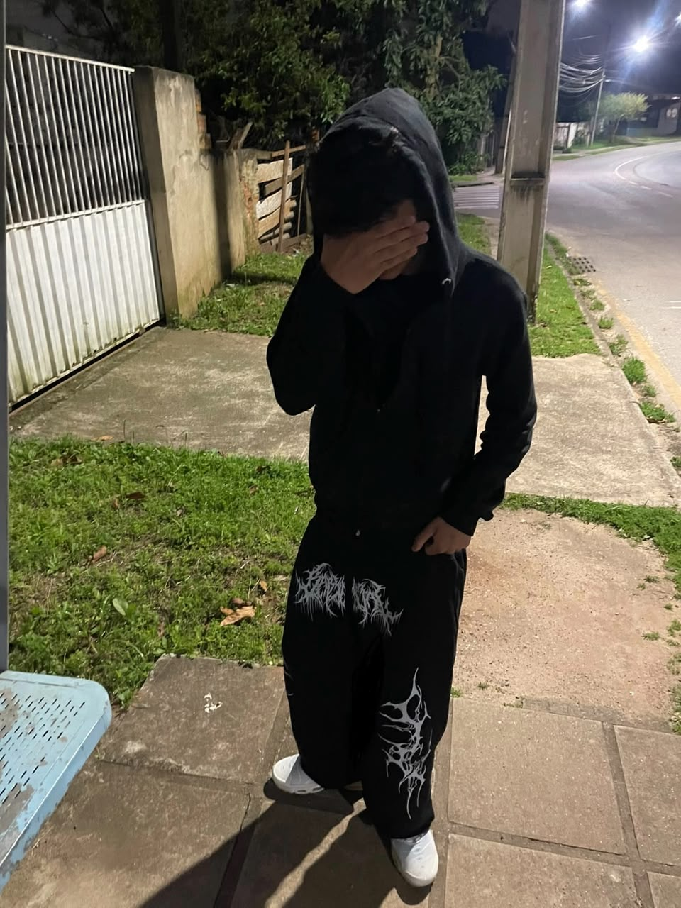

Bem-vindo ao meu site pessoal!
<<<<<<< HEAD Olá! Meu nome é Kaio Rodrigo, sou corinthiano de coração, gosto muito de jogar bola, principalmente como goleiro. Também gosto bastante do meu curso e estou sempre buscando aprender coisas novas e evoluir cada vez mais! ======= Olá! Meu nome é Kaio Rodrigo, sou corinthiano de coração, e gosto muito de jogar bola, principalmente como goleiro. Também gosto bastante do meu curso e estou sempre buscando aprender coisas novas e evoluir cada vez mais! >>>>>>> c386b7ed4144d8a5c9ab52c36dac3ce9f9d72afb
©2024 | Curso Tecnico | Todos os Direitos Reservados. Política de Privacidade | Proteção de dados | Encarregado de dados